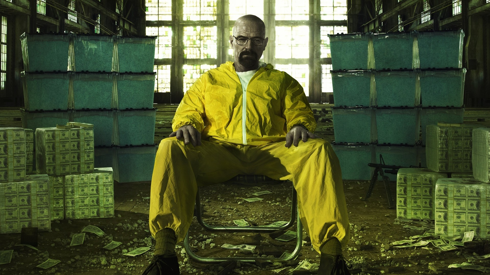
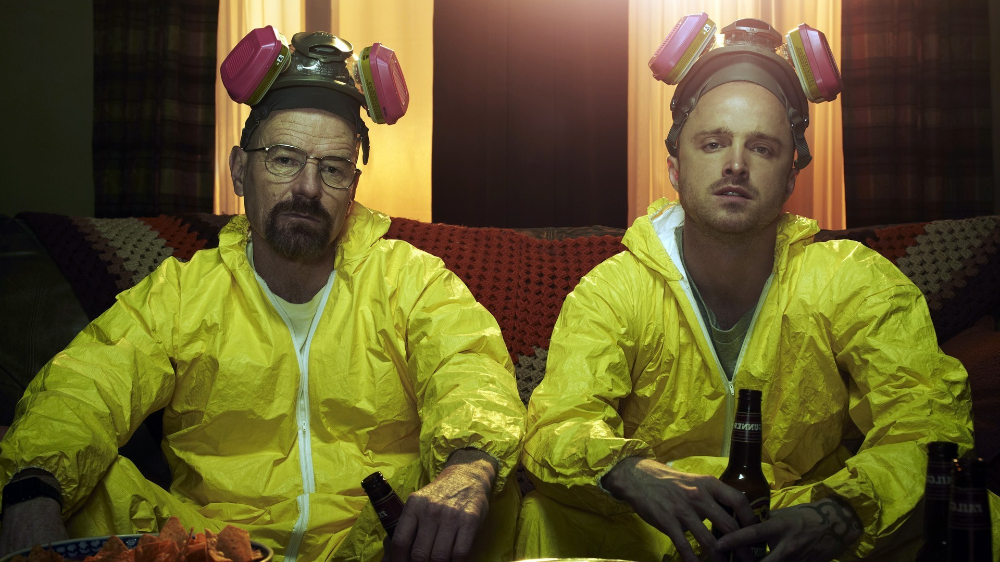
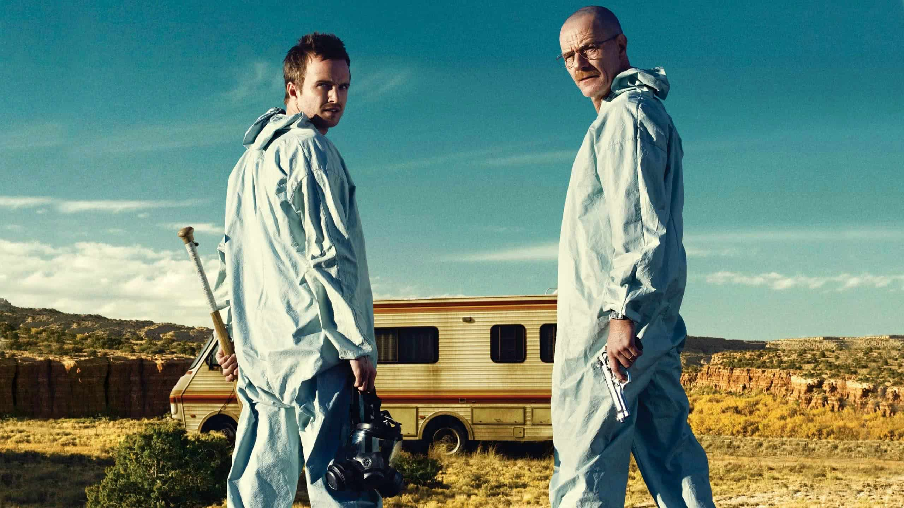
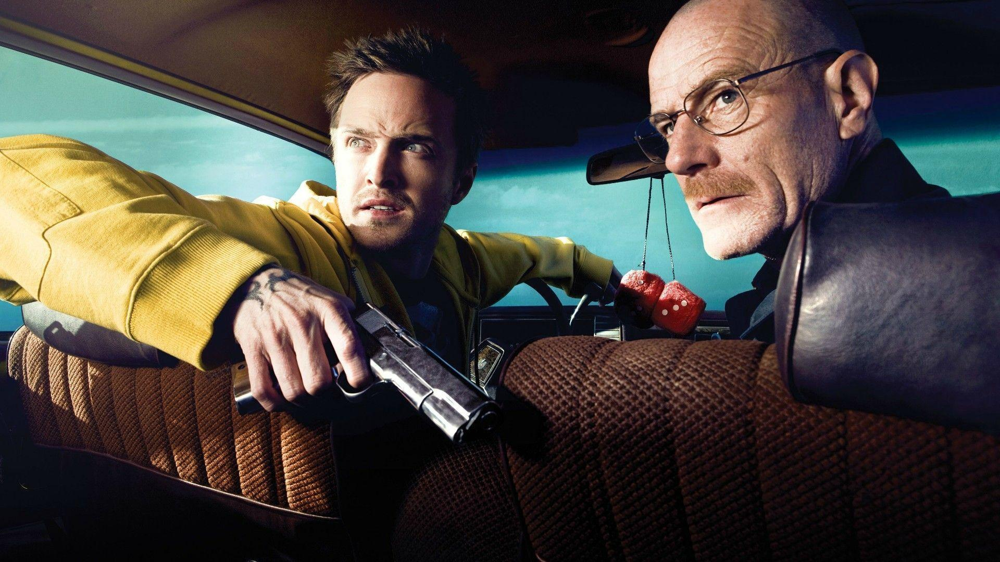
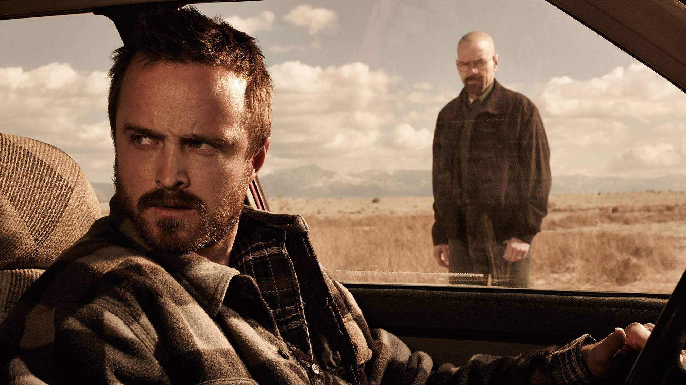
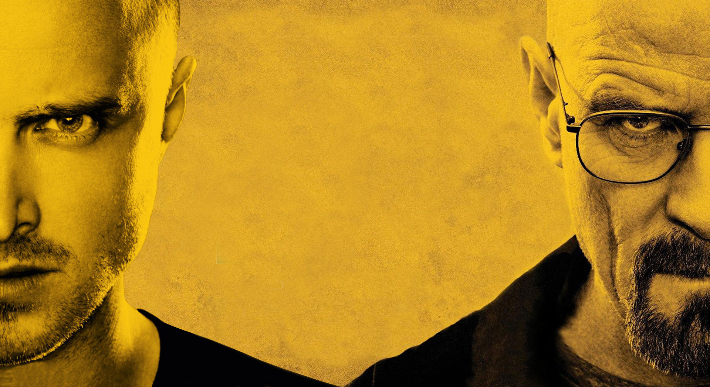
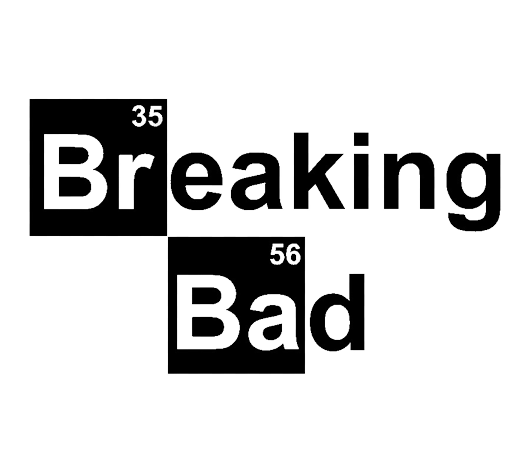

Walter White é um profº de química de 50 anos que dá aula em uma escola secundária no Novo México. Sua vida fica ainda mais complicada quando descobre um câncer de pulmão incurável. Para deixar dinheiro para sua família após sua morte, WW usa seus conhecimentos para fazer e vender metanfetamina, uma droga sintética. Ele conta com a ajuda do ex-aluno e pequeno traficante Jesse e enfrenta vários desafios, incluindo o fato de seu concunhado ser um importante agente Anti-Drogas da região.